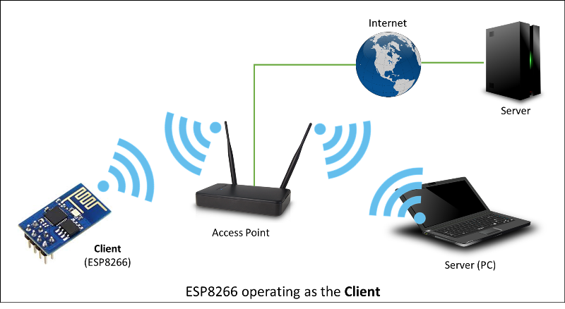

ESP8266 ARDUINO

Biblioteca ESP8266WiFi
Biblioteca ESP8266WiFi
ESP8266 se basa en Wi-Fi. Si desea conectar su nuevo módulo ESP8266 a una red Wi-Fi para comenzar a enviar y recibir datos, este es el lugar para comenzar. Si busca mas detalladamente cómo programar una funcionalidad de red Wi-Fi específica, también está en el lugar correcto.
Introducción
La biblioteca de Wi-Fi para ESP8266 ha sido desarrollada en base al SDK de ESP8266, utilizando las convenciones de nomenclatura y la filosofía de funcionalidad general de la biblioteca WiFi de Arduino. Con el tiempo, la gran cantidad de funciones de Wi-Fi portadas desde ESP9266 SDK a esp8266 Arduino superó la biblioteca WiFi de Arduino y se hizo evidente que necesitaríamos proporcionar documentación separada.
Esta documentación lo guiará a través de varias clases, métodos y propiedades de la biblioteca ESP8266WiFi. Si eres nuevo en C ++ y Arduino, no te preocupes. Comenzaremos con conceptos generales y luego pasaremos a la descripción detallada de los miembros de cada clase en particular, incluidos ejemplos de uso.
El alcance de la funcionalidad que ofrece la biblioteca ESP8266WiFi es bastante extenso y, por lo tanto, esta descripción se ha dividido en documentos separados por enlaces.
Inicio rápido
Si ya sabe cómo cargar el sketch Blink.ino en un módulo ESP8266 y hacer que el LED parpadee. Sino, utilice este tutorial de Adafruit u otro gran tutorial desarrollado por Sparkfun.
Para conectar el módulo ESP a Wi-Fi (como conectar un teléfono móvil a un punto de acceso), solo necesita un par de líneas de código:
#include <ESP8266WiFi.h>
void setup()
{
Serial.begin(115200);
Serial.println();
WiFi.begin("nombre-red", "contraseña");
Serial.print("Conectando");
while (WiFi.status() != WL_CONNECTED)
{
delay(500);
Serial.print(".");
}
Serial.println();
Serial.print("Conectado, dirección IP: ");
Serial.println(WiFi.IP local());
}
void loop() {}
En la línea
WiFi.begin("nombre-red", "contraseña");
reemplace "nombre-red" y "contraseña" para conectarse y suba este sketch al módulo ESP y abra el monitor en serie. Deberías ver algo como:
¿Como funciona? En la primera línea del boceto,
#include <ESP8266WiFi.h>
estamos incluyendo la biblioteca ESP8266WiFi. Esta biblioteca proporciona rutinas específicas de Wi-Fi ESP8266 a las que llamamos para conectarnos a la red.
La conexión real a Wi-Fi se inicializa llamando:
WiFi.begin("nombre-red", "contraseña");
El proceso de conexión puede tomar un par de segundos y estamos verificando si esto se ha completado en el siguiente ciclo:
while (WiFi.status() != WL_CONNECTED)
{
delay(500);
Serial.print(".");
}
El bucle
La última línea imprimirá la dirección IP asignada al módulo ESP por DHCP:
Serial.println(WiFi.localIP());
Si no ve la última línea, solo más y más puntos ........., entonces es probable que el nombre o la contraseña de la red Wi-Fi se introdujese incorrectamente en el sketch. Verifique el nombre y la contraseña conectándose de nuevo a la red Wi-Fi con un PC o un teléfono móvil.
Nota: si se establece la conexión y luego se pierde por alguna razón, ESP se volverá a conectar automáticamente al último punto de acceso utilizado una vez que vuelva a estar en línea. Esto se hará automáticamente por la biblioteca de Wi-Fi, sin intervención del usuario.
Eso es todo lo que necesitas para conectar ESP8266 a Wi-Fi. En los siguientes capítulos explicaremos qué cosas interesantes puede hacer el ESP una vez que está conectado.
Quién es quién
Los dispositivos que se conectan a redes Wi-Fi se denominan estaciones (STA). La conexión a Wi-Fi es proporcionada por un punto de acceso (AP), que actúa como un centro para una o más estaciones. El punto de acceso en el otro extremo está conectado a una red cableada. Un punto de acceso generalmente se integra con un enrutador para proporcionar acceso desde una red Wi-Fi a Internet. Cada punto de acceso es reconocido por un SSID (Service Set IDentifier), que es esencialmente el nombre de la red que selecciona al conectar un dispositivo (estación) al Wi-Fi.
Los módulos ESP8266 pueden funcionar como una estación, por lo que podemos conectarlo a la red Wi-Fi. También puede funcionar como un punto de acceso (soft-AP), para establecer su propia red Wi-Fi. Cuando el módulo ESP8266 funciona como un punto de acceso, podemos conectar otras estaciones al módulo ESP. ESP8266 también puede funcionar como una estación y en modo de soft-AP. Esto proporciona la posibilidad de construir redes de malla. ESP8266 operando en el modo Station + Soft Access Point
La biblioteca ESP8266WiFi proporciona una amplia colección de métodos (funciones) y propiedades de C ++ para configurar y operar un módulo ESP8266 en estación y / o en punto de acceso. Se describen en los siguientes capítulos.
Descripción de clase
La biblioteca ESP8266WiFi se divide en varias clases. En la mayoría de los casos, al escribir el código, el usuario no se preocupa por esta clasificación. Lo estamos utilizando para dividir la descripción de esta biblioteca en piezas más manejables.
Los capítulos siguientes describen todas las llamadas a funciones (métodos y propiedades en términos de C ++) enumeradas en clases particulares de ESP8266WiFi. La descripción se ilustra con ejemplos de aplicación y fragmentos de código para mostrar cómo usar las funciones en la práctica. Esta información se divide en los siguientes documentos.
Estación
El modo de estación (STA) se usa para conectar el módulo ESP a una red Wi-Fi establecida por un punto de acceso.
La clase de estación tiene varias características para facilitar la administración de una conexión Wi-Fi. En caso de que se pierda la conexión, el ESP8266 se volverá a conectar automáticamente al último punto de acceso utilizado, una vez que esté disponible nuevamente. Lo mismo sucede en el reinicio del módulo. Esto es posible ya que ESP guarda las credenciales en el último punto de acceso utilizado en la memoria flash (no volátil). El uso de los datos guardados ESP también se volverá a conectar si se ha cambiado el boceto pero el código no altera el modo Wi-Fi o las credenciales.
Punto de acceso por software
Un punto de acceso (AP) es un dispositivo que proporciona acceso a una red Wi-Fi a otros dispositivos (estaciones) y los conecta a una red cableada. El ESP8266 puede proporcionar una funcionalidad similar, excepto que no tiene interfaz para una red cableada. Este modo se llama punto de acceso por software (soft-AP). El número máximo de estaciones que se pueden conectar simultáneamente al soft-AP se puede configurar de 0 a 8, pero el valor predeterminado es 4.

El modo soft-AP se usa con frecuencia y es un paso intermedio antes de conectar ESP a un Wi-Fi en un modo de estación. Esto es cuando el SSID y la contraseña de dicha red no se conocen por adelantado. ESP se inicia primero en modo soft-AP, por lo que podemos conectarnos a él usando una computadora portátil o un teléfono móvil. Entonces podemos proporcionar credenciales a la red de destino. Luego, el ESP cambia al modo de estación y puede conectarse al Wi-Fi objetivo.
Otra aplicación práctica del modo soft-AP es configurar redes de malla. El ESP puede funcionar tanto en modo soft-AP como en modo Station para que pueda actuar como un nodo de una red de malla.
Escanear
Para conectar un teléfono móvil a una zona activa, normalmente abre la aplicación de configuración de Wi-Fi, enumera las redes disponibles y elige la zona activa que necesita. Luego ingrese una contraseña (o no) y estará listo. Puede hacer lo mismo con el ESP. La clase de escaneo implementa la funcionalidad de escaneo y el listado de redes disponibles en el rango.
Cliente
La clase Cliente crea clientes que pueden acceder a los servicios proporcionados por los servidores para enviar, recibir y procesar datos.
AxTLS Client Secure - OBSOLETO
La siguiente sección detalla axTLS, la biblioteca TLS más antigua utilizada por el proyecto. Todavía es compatible, pero generalmente no se realizarán correcciones y documentación adicionales. Consulte la siguiente sección para el objeto de cliente TLS actualizado.
AxTLS Client Secure es una extensión de la clase de cliente donde la conexión y el intercambio de datos con los servidores se realiza mediante un protocolo seguro. Es compatible con TLS 1.1. El TLS 1.2 no es compatible.
Las aplicaciones seguras tienen una carga adicional de memoria (y procesamiento) debido a la necesidad de ejecutar algoritmos de criptografía. Cuanto más fuerte es la clave del certificado, más gastos generales se necesitan.
BearSSL Client Secure y Server Secure
BearSSL :: WiFiClientSecure y BearSSL :: WiFiServerSecure son extensiones de las clases estándar de Cliente y Servidor donde la conexión y el intercambio de datos con servidores y clientes utilizan un protocolo seguro. Es compatible con TLS 1.2 utilizando una amplia variedad de cifrados modernos, hashes y tipos de clave.
Los clientes y servidores seguros requieren cantidades significativas de memoria y procesamiento adicionales para habilitar sus algoritmos criptográficos. En general, solo se puede procesar una única conexión segura de cliente o servidor a la vez dada la poca RAM presente en el ESP8266, pero hay métodos para reducir este requisito de RAM detallados en las secciones relevantes.
BearSSL :: WiFiClientSecure contiene más información sobre el uso y la configuración de las conexiones TLS.
BearSSL :: WiFiServerSecure analiza el modo de servidor TLS disponible. Lea y comprenda primero BearSSL :: WiFiClientSecure, ya que el servidor utiliza la mayoría de los mismos conceptos.
Servidor
La clase de servidor crea servidores que proporcionan funcionalidad a otros programas o dispositivos, llamados clientes.
Los clientes se conectan a sever para enviar y recibir datos y acceder a la funcionalidad proporcionada.
UDP
La clase UDP permite enviar y recibir los mensajes del Protocolo de datagramas de usuario (UDP). El UDP utiliza un modelo de transmisión simple "dispare y olvide" sin garantía de entrega, pedido o protección duplicada. UDP proporciona sumas de comprobación para la integridad de los datos y números de puerto para abordar diferentes funciones en el origen y el destino del datagrama.
Genérico
Hay varias funciones que ofrece el SDK de ESP8266 y no están presentes en la biblioteca WiFi de Arduino. Si dicha función no se ajusta a una de las clases discutidas anteriormente, probablemente será en Clase genérica. Entre ellos se encuentra el controlador para administrar eventos de Wi-Fi como conexión, desconexión u obtención de una IP, cambios de modo de Wi-Fi, funciones para administrar el modo de suspensión del módulo, nombre de host a una resolución de dirección IP, etc.